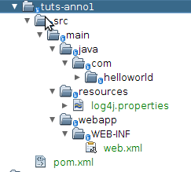

Now create the folder structure required for a web project and edit the web.xml file:

And integrate MiltonFilter into your web.xml file, specifying the AnnotationResourceFactory:
<?xml version="1.0" encoding="UTF-8"?>
<web-app xmlns="http://java.sun.com/xml/ns/j2ee"
xmlns:xsi="http://www.w3.org/2001/XMLSchema-instance"
xsi:schemaLocation="http://java.sun.com/xml/ns/j2ee http://java.sun.com/xml/ns/j2ee/web-app_2_4.xsd"
version="2.4">
<filter>
<filter-name>MiltonFilter</filter-name>
<filter-class>io.milton.servlet.MiltonFilter</filter-class>
<!-- This param shows how to exclude certain paths from the MiltonFilter -->
<!-- These paths will "fall through" the filter and be handled as normal servlet resources -->
<init-param>
<param-name>milton.exclude.paths</param-name>
<param-value>/myExcludedPaths,/moreExcludedPaths</param-value>
</init-param>
<init-param>
<param-name>resource.factory.class</param-name>
<param-value>io.milton.http.annotated.AnnotationResourceFactory</param-value>
</init-param>
<!-- List packages where milton should find, and instantiate, controllers -->
<init-param>
<param-name>controllerPackagesToScan</param-name>
<param-value>com.helloworld</param-value>
</init-param>
</filter>
<filter-mapping>
<filter-name>MiltonFilter</filter-name>
<url-pattern>/*</url-pattern>
</filter-mapping>
<session-config>
<session-timeout>
30
</session-timeout>
</session-config>
<welcome-file-list>
<welcome-file>
index.jsp
</welcome-file>
</welcome-file-list>
</web-app>